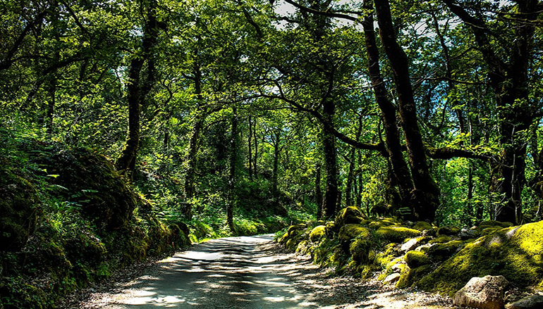
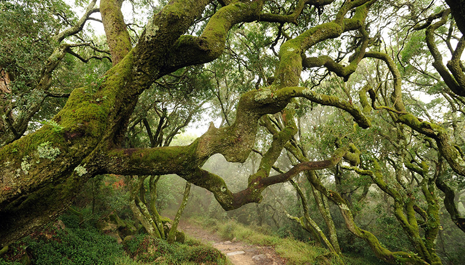
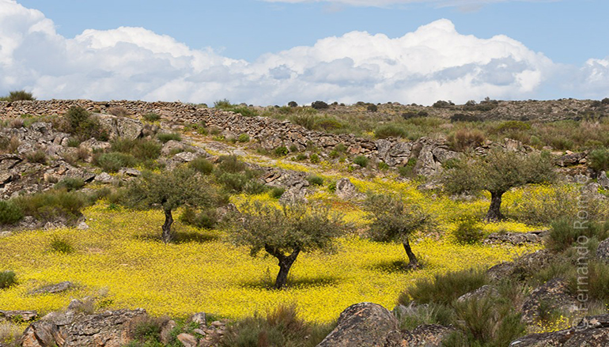
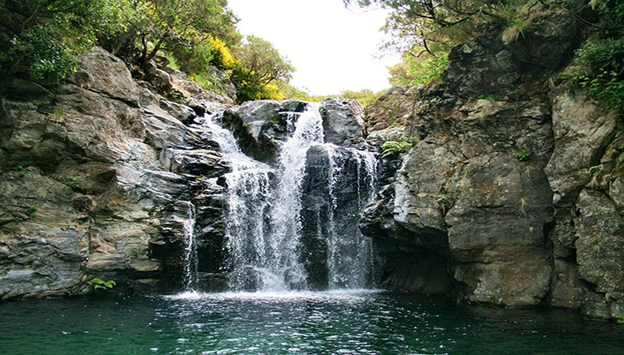

Florestas a visitar em Portugal
Parque Nacional Peneda-Gerês
O Parque Nacional da Peneda-Gerês fica no norte de Portugal, perto da fronteira espanhola. As suas colinas acidentadas albergam veados, lobos e águias-reais.
Os trilhos incluem uma estrada romana repleta de marcos. A estância termal do Gerês, do século VII, fica nas proximidades. Lindoso é uma freguesia tradicional com um castelo medieval e espigueiros em pedra.
A norte, o Santuário de Nossa Senhora da Peneda, do século XIX, fica no topo de uma enorme escadaria.

Mata do Buçaco
A Mata Nacional do Buçaco é uma área protegida localizada na Serra do Buçaco, freguesia de Luso, concelho da Mealhada.
Foi plantada pela Ordem dos Carmelitas Descalços no primeiro quarto do século XVII, encontrando-se delimitada pelos murros erguidos pela ordem para limitar o acesso a mata.

Reserva da Faia Brava
A Reserva da Faia Brava é uma área protegida de âmbito privado localizada no Vale do Côa, Portugal.
Foi a primeira e é a única área protegida privada em Portugal.

Bosque de Laurissilva
Laurissilva é um tipo de floresta húmida, composta maioritariamente por árvores da família das lauráceas e endémico da Macaronésia, região formada pelos arquipélagos da Madeira, Açores, Canárias e Cabo Verde.
